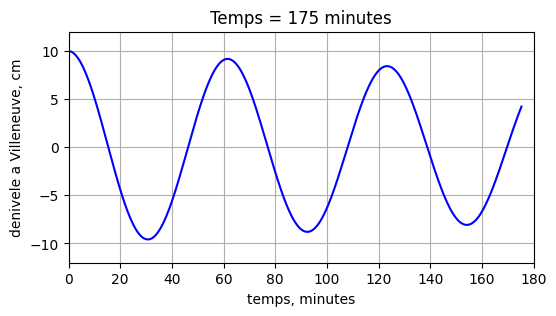

Tutoriel 1#
Notions fondamentales en Python pour ce cours#
Ce tutoriel revient sur les notions que nous utiliserons tout au long du cours : import de bibliothèques, indentation, indexation, incrémentation et vecteurs numpy. Il se termine par un code complet à exécuter et avec lequel jouer, qui donne la structure de tous les modèles du semestre.
1. Import de bibliothèques#
Trois bibliothèques suffisent pour ce cours : numpy pour les calculs sur les tableaux, matplotlib pour les graphiques, IPython pour l’affichage interactif. On leur donne des alias (noms courts) pour s’économiser des lignes.
import numpy as np
import matplotlib.pyplot as plt
from IPython.display import clear_output, display
2. Indentation#
En Python, l’indentation (les espaces en début de ligne) détermine la structure du code : toutes les lignes indentées appartiennent au même bloc. C’est vrai pour les boucles for, while et pour les clauses if.
⚠️ Attention : une fois choisi un nombre d’espaces (4 en général), il faut le respecter dans tout le bloc.
for i in range(3):
print(" boucle for, i =", i) # ligne indentee : dans la boucle
print("apres la boucle") # non indentee : en dehors
i = 3
if i == 0:
print("i est egal a zero")
elif i < 5:
print("i =", i, "-> inferieur a 5")
i = 0
while i < 3:
i += 1 # incrementation, voir section 5
print("apres la boucle while, i =", i)
boucle for, i = 0
boucle for, i = 1
boucle for, i = 2
apres la boucle
i = 3 -> inferieur a 5
apres la boucle while, i = 3
3. Indexation et assignement#
⚠️ Attention : Python compte à partir de 0 ! On accède aux éléments depuis le début (indices positifs) ou depuis la fin (indices négatifs).
Index (positif) |
0 |
1 |
2 |
3 |
4 |
5 |
|---|---|---|---|---|---|---|
Index (négatif) |
-6 |
-5 |
-4 |
-3 |
-2 |
-1 |
Valeur |
‘red’ |
‘green’ |
‘blue’ |
‘yellow’ |
‘white’ |
‘black’ |
On modifie un élément en écrivant simplement liste[indice] = valeur.
couleurs = ['red', 'green', 'blue', 'yellow', 'white', 'black']
print("premier :", couleurs[0], " dernier :", couleurs[-1], " avant-dernier :", couleurs[-2])
couleurs[0] = 'pink' # modification par indice
couleurs[-1] = 'grey'
print("apres modification :", couleurs)
premier : red dernier : black avant-dernier : white
apres modification : ['pink', 'green', 'blue', 'yellow', 'white', 'grey']
4. Incrémentation#
Plutôt que d’écrire i = i + 1, Python offre des opérateurs raccourcis : i += 1, i -= 1, i *= 10, i /= 2. Ils sont omniprésents dans les boucles et dans la mise à jour des modèles numériques.
position = 0.0
vitesse = 2.0
dt = 0.1
for pas in range(5):
position += vitesse * dt # mise a jour a chaque pas de temps
print("pas", pas+1, ": position =", round(position, 2))
pas 1 : position = 0.2
pas 2 : position = 0.4
pas 3 : position = 0.6
pas 4 : position = 0.8
pas 5 : position = 1.0
5. Vecteurs numpy#
Nous travaillerons intensivement avec des vecteurs (et des matrices) numpy. On y accède et on les modifie par leurs indices, exactement comme une liste — mais on peut aussi opérer sur tout le vecteur d’un coup, sans écrire de boucle.
Il faut bien avoir en tête que lorsque l’on écrit A[i] = l :
A (vecteur) i (indice) l (valeur)
│ │ │
└───────────────► A[i] = l
A ne peut prendre entre crochets qu’un indice entier.
A = np.zeros(10)
A = A + 3 # ajoute 3 a TOUS les elements, sans boucle
A[0] += 1 # modifie le premier element
A[2] -= 3 # le troisieme
A[5] += 5 # le sixieme (indice 5 !)
print(A)
[4. 3. 0. 3. 3. 8. 3. 3. 3. 3.]
6. Un code complet : la seiche du Léman#
Pour finir, un code entier qui implémente un modèle. Commencez par l’exécuter et regardez ce qui s’affiche.
import numpy as np
import matplotlib.pyplot as plt
from IPython.display import clear_output, display
# 1) parametres physiques
L = 72000.0 # longueur du Leman, m
H = 154.0 # profondeur moyenne, m
g = 9.81 # pesanteur, m/s2
eta0 = 0.10 # denivele juste apres la tempete, m
tau_h = 12 # temps caracteristique d'amortissement, h
tau = tau_h*3600.0 # temps caracteristique d'amortissement, s
duree = 3*3600.0 # duree totale simulee, s
# 2) parametres numeriques
dt = 20.0 # pas de temps, s
freq_affich = 15 # une image toutes les freq_affich iterations
# 3) initialisation
omega = np.pi*np.sqrt(g*H)/L # pulsation propre du lac, rad/s
gamma = 2.0/tau # coefficient d'amortissement, 1/s
nt = int(duree/dt)
eta = eta0 # denivele a Villeneuve, m
v = 0.0 # vitesse de montee de l'eau, m/s
temps = 0.0 # temps, s
eta_sauve = np.zeros(nt)
temps_sauve = np.zeros(nt)
# 4) creation de la figure AVANT la boucle
fig, ax = plt.subplots(figsize=(6,3))
# 5) boucle temporelle
for it in range(nt):
# le modele
v += dt*( - omega**2*eta - gamma*v )
eta += dt*v
temps += dt
eta_sauve[it] = eta
temps_sauve[it] = temps
# affichage
if it % freq_affich == 0:
clear_output(wait=True)
ax.cla()
ax.plot(temps_sauve[:it+1]/60, eta_sauve[:it+1]*100, c='b')
ax.set_xlim([0, duree/60])
ax.set_ylim([-12, 12])
ax.grid(True)
ax.set_xlabel('temps, minutes')
ax.set_ylabel('denivele a Villeneuve, cm')
ax.set_title('Temps = ' + str(round(temps/60)) + ' minutes')
display(fig)
plt.pause(0.02)
plt.close()
print("Periode donnee par le modele :", round(2*np.pi/omega/60, 1), "minutes")

Periode donnee par le modele : 61.7 minutes
Ce que vous venez de simuler s’appelle une seiche. Quand une tempête souffle dans l’axe du Léman, le vent pousse l’eau vers Villeneuve ; le vent tombé, l’eau redescend, dépasse l’équilibre, remonte côté Genève — et le lac oscille lentement, comme l’eau d’une baignoire. Sa période mesurée est d’environ 73 minutes ; le modèle en trouve 62, parce qu’il décrit le Léman comme une boîte rectangulaire de profondeur constante.
Relisez maintenant le code — non pas pour comprendre les équations, mais pour voir comment il est organisé. C’est la structure de tous les modèles du cours :
Bloc |
Contenu |
|---|---|
1. Paramètres physiques |
ce qui décrit la nature, avec les unités |
2. Paramètres numériques |
pas de temps, fréquence d’affichage |
3. Initialisation |
grandeurs calculées une fois, état de départ |
4. La figure, créée avant la boucle |
|
5. La boucle temporelle |
le modèle, puis l’affichage |
Repérez ces cinq blocs dans le code : ils y sont signalés par des commentaires. Remarquez aussi qu’aucune valeur numérique n’est écrite en dur dans la boucle.
À expérimenter#
Passez
Hde 154 à 300 m, et ré-exécutez. L’oscillation est-elle plus rapide ou plus lente ?Passez
tau, le temps d’amortissement, de 12 heures à 1 heure (tau = 3600), puis à 100 heures. Qu’est-ce qui change dans l’allure de la courbe — et la période, elle, change-t-elle ?
Pour les curieux — facultatif. Le lac est décrit comme une boîte de longueur \(L\) et de profondeur \(H\). En notant \(\eta(t)\) le dénivelé de la surface à son extrémité, la physique des ondes en eau peu profonde donne un oscillateur amorti :
\[\frac{d^2 \eta}{dt^2} = - \omega^2 \eta - \gamma \frac{d\eta}{dt}, \qquad \omega = \frac{\pi \sqrt{g H}}{L}, \qquad \gamma = \frac{2}{\tau}\]En posant \(v = d\eta/dt\), cette équation du second ordre se ramène à deux équations du premier ordre,
\[\frac{dv}{dt} = - \omega^2 \eta - \gamma v, \qquad \frac{d\eta}{dt} = v,\]que l’on discrétise en deux mises à jour successives :
v += dt*(-omega**2*eta - gamma*v), puiseta += dt*v.La période propre du lac vaut \(T = 2\pi/\omega = 2L/\sqrt{gH}\) : elle ne dépend que de sa longueur et de sa profondeur, pas de l’amortissement ni de l’amplitude de départ.